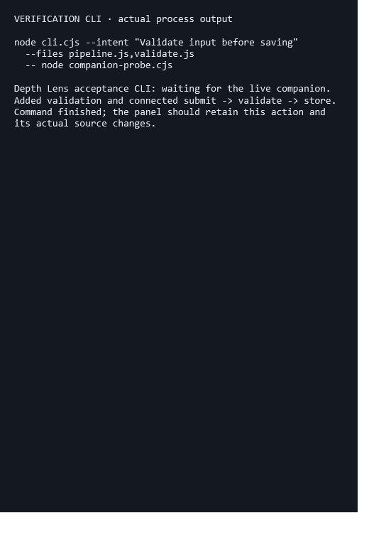
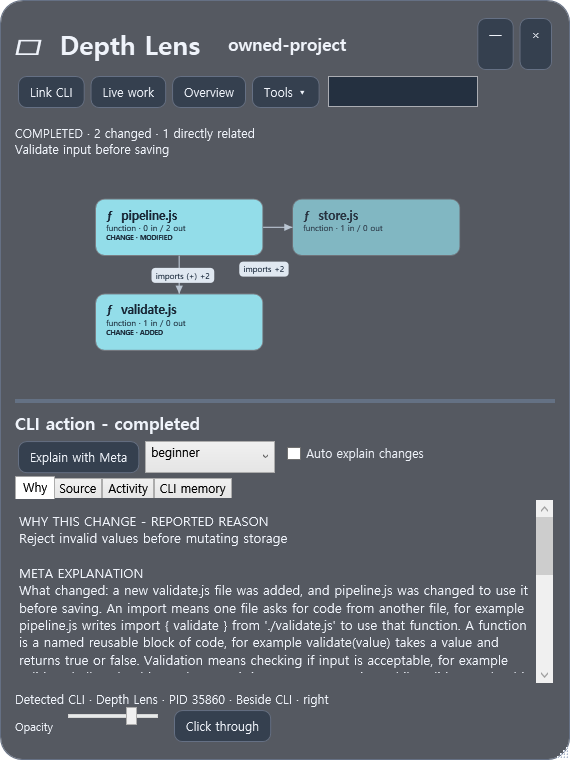
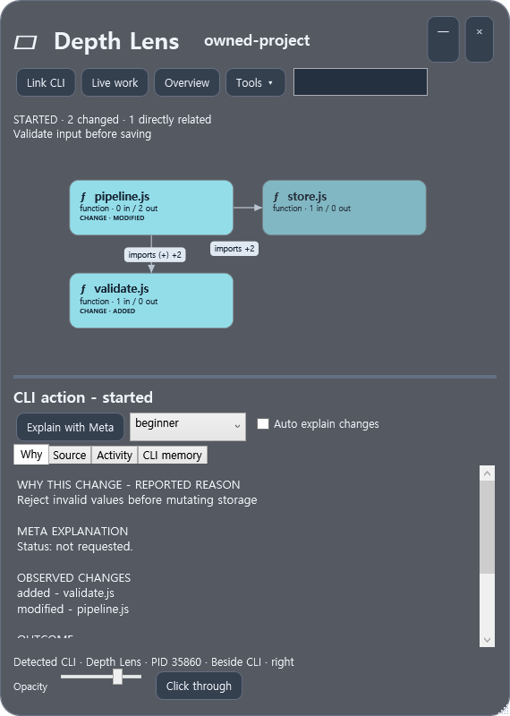
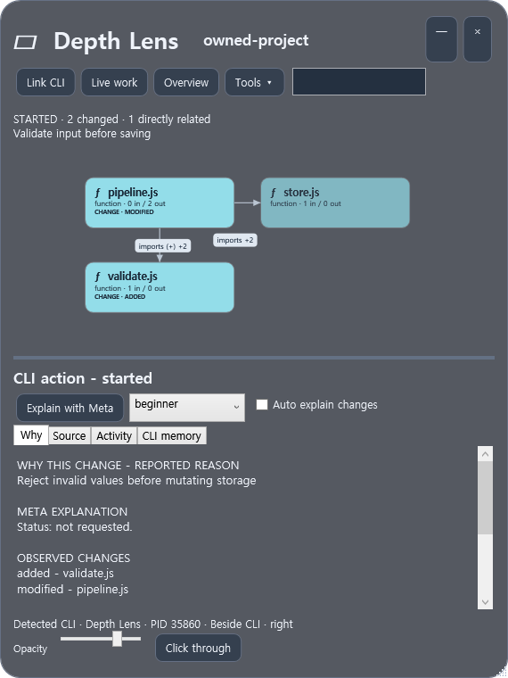
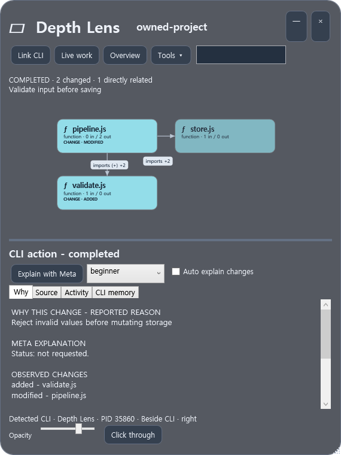

Depth Lens 0.2.0 · CLI companion
CLI 바로 옆에서,
방금 한 작업을 봅니다.
기존 0.1.0은 별도 프로젝트 지도였습니다. 0.2.0은 연결한 CLI 창 옆을 따라가며 작업이 바꾼 모듈과 직접 연결, 작업 이유를 자동으로 펼칩니다.
Depth Lens.exe실행·MCP 안내왼쪽은 실제 Node 명령을 실행하고 stdout/stderr를 보여 주는 별도 네이티브 검수 창입니다. 오른쪽은 같은 명령이 바꾼 파일과 실제 Meta 설명을 보여 주는 Depth Lens입니다. 각각 실행 중인 WPF 컨트롤을 캡처한 원본입니다. 아래 배치는 두 PNG를 보여 주는 갤러리이며 OS 바탕화면 전체 캡처가 아닙니다. 일반 Windows Terminal/Codex 창 성공으로 대체하지 않습니다.




어떻게 연결되는가
- 프로그램을 켜고 폴더를 드롭하거나 Tools → Open project folder로 선택합니다.
- Tools → Copy MCP configuration에서 받은 설정을 CLI에 등록합니다. 동봉한 명령 어댑터도 사용할 수 있습니다.
- 연결된 프로세스의 실제 창을 한 개로 확인하면 자동으로 붙습니다. 확인할 수 없거나 여러 창이면 Link CLI에서 창과 해당 MCP/명령 연결을 함께 선택합니다.
- CLI는 작업 전후 목적·대상 파일·결과를 보고합니다. 파일 감시는 독립적으로 실제 변화와 관계를 갱신합니다. Live work는 현재 작업을 따라가고 Overview는 전체 프로젝트를 살펴보는 모드입니다.
- 패널은 CLI의 이동·크기·최소화를 따라갑니다. 직접 패널을 끌면 위치 추적을 멈춥니다. Tools에서 재개하거나 분리할 수 있습니다.
창 옆 공간이 없으면 화면 가장자리의 겹침 모드임을 표시합니다. 다른 프로그램의 창 크기를 자동으로 바꾸지 않습니다. CLI가 닫히면 패널은 남아 다시 연결할 수 있습니다.
작업 중과 완료 후






검증 기록
검사 결과·캡처 원본 해시·실행 파일 해시에서 서로 다른 검수 범위를 확인할 수 있습니다.
| 범위 | 검수 |
|---|---|
| 작업·연결 서비스 | 9개: 실제 파일 연속 저장, CLI별 분리, 미보고 변경, 삭제 연결, 실패 후 부분 저장, 종료 연결 처리 |
| 기존 분석·MCP 처리·문맥 | 16개 통합 회귀 검사. 이 묶음의 Meta는 명시적 fixture |
| 네이티브 CLI 동반 패널 | 별도 검수 호스트 + 실제 Node 명령에서 17개: 창 자동 연결, 실제 옆 좌표, 이동·크기, 포커스, 최소화·복원, 변경 지도, 실제 Meta, 클릭 통과 복구, 창 종료 |
| 실제 Meta | muse-spark-1.3. 이번 CLI 작업 ID·소스 revision에 연결된 초보·중급·숙련 설명. 새 작업 화면의 Explain 동작에서 요청 |
남은 확인 범위
일반 cmd 콘솔을 직접 띄운 검수는 현재 실행 환경에서 표시 가능한 창을 얻지 못했습니다. 그래서 실제 Node 프로세스를 보여 주는 별도 WPF 검수 호스트로 창 추적을 확인했습니다. 사용자의 Windows Terminal/Codex 실사용 창 연결, 탭별 자동 식별, 여러 모니터/DPI, OS 바탕화면 합성 픽셀과 물리 키 입력은 완료된 검수가 아닙니다.
MCP 연결만으로 모든 CLI 내부 도구를 감청하지 않습니다. 보고 없는 변경의 목적은 미확인입니다. 모호한 프로세스/창을 자동으로 단정하지 않으며 Link CLI로 지정합니다. 첫 분석 범위는 Windows의 JS/TS 정적 관계입니다. 이전 제품의 모든 언어·런타임 구현을 재개한 것은 아닙니다.
창 식별 제약은 Microsoft GetConsoleWindow 문서의 pseudoconsole 설명도 참고했습니다. 이 문서는 특정 CLI에서의 검수 성공 증거가 아닙니다.